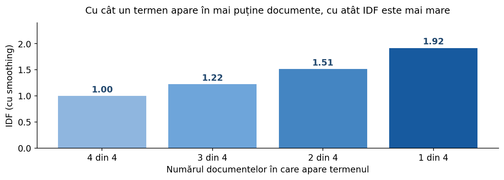
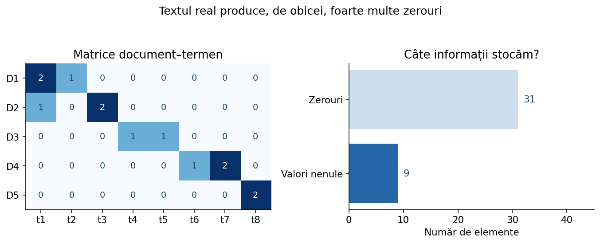

Recenzii și sentiment
Începe cu: ngram_range=(1,2). Bigramele pot reprezenta „nu recomand” sau „foarte bun”. Compară cu (1,1) pe aceeași validare.
O lecție aplicată despre transformarea textului în numere. Construim reprezentările manual, le interpretăm geometric, apoi le reproducem cu scikit-learn. Fiecare alegere de parametri este legată de o situație reală.
Un clasificator liniar, un algoritm K-Means sau un calcul de similaritate lucrează cu valori numerice. Textul „python pentru elevi” nu este direct o listă de coordonate. Trebuie să stabilim ce proprietăți vom măsura și să construim un vector numeric pentru fiecare document.
Există două decizii distincte: ce caracteristici construim (cuvinte, bigrame, caractere) și ce valoare punem în fiecare coordonată (0/1, număr de apariții, TF-IDF). De aceea, nu există un singur „vectorizator bun pentru orice problemă”.
La detectarea spamului, apariția termenilor „câștig”, „urgent” sau a unui URL poate fi informativă. La clasificarea sentimentului, expresia nu recomand trebuie păstrată. La căutarea documentelor, preferăm să nu lăsăm termenii foarte răspândiți să domine asemănarea.
Vom folosi un corpus mic, tocmai pentru a vedea ce face algoritmul. Considerăm D1 = „tenis sport”, D2 = „tenis sport date”, D3 = „algoritm” și o ordine fixă a coloanelor. Ordinea aleasă nu schimbă informația, dar trebuie folosită consecvent.
| Document | algoritm | date | sport | tenis |
|---|---|---|---|---|
| D1 | 0 | 0 | 1 | 1 |
| D2 | 0 | 1 | 1 | 1 |
| D3 | 1 | 0 | 0 | 0 |
Fiecare rând descrie un document; fiecare coloană este un termen al vocabularului. Dacă un termen nu apare în document, valoarea sa este zero. Astfel, D3 are valoarea 1 pe coloana „algoritm” și 0 pe celelalte. Matricea prezentată este BoW binar, pentru că în aceste trei documente fiecare termen apare cel mult o dată.
texte = ["tenis sport", "tenis sport date", "algoritm"] tokeni = [text.lower().split() for text in texte] vocabular = sorted({cuvant for doc in tokeni for cuvant in doc}) matrice = [] for doc in tokeni: linie = [] for cuvant in vocabular: linie.append(doc.count(cuvant)) matrice.append(linie) print("Vocabular:", vocabular) for i, linie in enumerate(matrice, 1): print("D", i, linie)
set elimină termenii repetați; sorted fixează ordinea coloanelor. count determină numărul de apariții dintr-un document. Această implementare este ușor de înțeles, dar pentru corpusuri mari folosim o bibliotecă și matrici rare.
from sklearn.feature_extraction.text import CountVectorizer texte = ["tenis sport", "tenis sport date", "algoritm"] vectorizer = CountVectorizer() X = vectorizer.fit_transform(texte) print(vectorizer.get_feature_names_out().tolist()) print(X.toarray()) # doar pentru un corpus minuscul
fit_transform() construiește vocabularul și matricea. get_feature_names_out() arată ordinea coloanelor. Matricea este rară; apelul toarray() este doar pentru afișare didactică.
Un vocabular nu este o listă de „sensuri”, ci o listă de caracteristici; două cuvinte cu același sens pot primi coloane diferite. BoW nu face automat sinonimizare sau lematizare.
Dacă un cuvânt apare de cinci ori, în reprezentarea BoW obișnuită valoarea este 5. Dacă ne interesează numai dacă apare, folosim 1. Ambele variante pot fi utile, dar răspund la întrebări diferite.
Într-o clasificare de mesaje scurte, simpla apariție a expresiei „ofertă” poate fi suficientă. În analiza documentelor lungi, frecvența termenilor poate informa mai bine despre subiect. Nu există însă garanția că repetarea excesivă trebuie să producă un scor mai mare.
from sklearn.feature_extraction.text import CountVectorizer texte = ["ofertă ofertă ofertă", "ofertă verificată", "mesaj simplu"] for mod in [False, True]: v = CountVectorizer(binary=mod) X = v.fit_transform(texte) print("binary=", mod, "vocabular=", v.get_feature_names_out().tolist()) print(X.toarray())
Cu binary=False termenul „ofertă” primește 3 în primul document; cu binary=True primește 1. Nu confunda această opțiune cu TF-IDF: într-un vectorizator TF-IDF, binary=True binarizează doar frecvența inițială, iar valorile finale pot fi fracționare.
Două propoziții pot conține exact aceleași cuvinte, dar în altă ordine. BoW nu distinge între „ana îl vede pe ion” și „ion o vede pe ana” dacă, după preprocesare, rezultă aceeași mulțime cu aceleași frecvențe.
Pentru sentiment, exemplul clasic este diferența dintre bun și nu bun. Un BoW cu unigrame poate recunoaște separat termenii „nu” și „bun”, însă nu codifică explicit faptul că ei sunt alăturați. N-gramele introduc informație locală despre ordine.
tokeni = ["nu", "este", "foarte", "bun"] for n in [1, 2, 3]: ngrame = [] for i in range(len(tokeni) - n + 1): ngrame.append(" ".join(tokeni[i:i+n])) print(f"{n}-grame:", ngrame)
Pentru analyzer="word", ngram_range=(1,1) folosește doar cuvinte individuale, (1,2) include și bigrame, iar (1,3) adaugă trigrame. Cu cât intervalul este mai mare, cu atât reprezentarea poate surprinde expresii mai specifice, dar vocabularul și sparsitatea cresc.
Începe cu: ngram_range=(1,2). Bigramele pot reprezenta „nu recomand” sau „foarte bun”. Compară cu (1,1) pe aceeași validare.
Începe cu: (1,1), apoi testează (1,2) dacă există expresii precum „piață financiară” sau „inteligență artificială”.
Bigramele pot fi foarte rare. Nu porni automat de la trigrame: există risc de memorare și multe coloane aproape goale.
from sklearn.feature_extraction.text import CountVectorizer texte = ["nu recomand produsul", "recomand produsul", "produs foarte bun"] for limita in [(1, 1), (1, 2)]: v = CountVectorizer(ngram_range=limita) X = v.fit_transform(texte) print(limita, "->", len(v.get_feature_names_out()), "caracteristici") print(v.get_feature_names_out().tolist())
Adăugarea bigramelor nu „rezolvă” negațiile în orice context, dar oferă modelului caracteristici care pot diferenția mai bine propozițiile.
analyzer="word" construiește caracteristici din tokeni. analyzer="char" extrage secvențe din textul brut; acestea pot trece inclusiv peste spații. analyzer="char_wb" extrage n-grame în interiorul delimitărilor de cuvinte, adăugând spații la marginea lor.
Pentru texte zgomotoase, greșeli de tastare, diacritice lipsă sau variante flexionare, n-gramele de caractere pot fi robuste. Exemplu: „programare” și „progrmare” împart multe secvențe de 3–5 caractere chiar dacă sunt două cuvinte diferite pentru un vectorizator pe cuvinte.
from sklearn.feature_extraction.text import TfidfVectorizer from sklearn.metrics.pairwise import cosine_similarity texte = ["programare", "progrmare", "fotbal"] v = TfidfVectorizer(analyzer="char_wb", ngram_range=(3, 5)) X = v.fit_transform(texte) S = cosine_similarity(X) print("Similaritate programare/progrmare:", round(S[0, 1], 3)) print("Similaritate programare/fotbal:", round(S[0, 2], 3))
(3,5) este o alegere de experiment, nu o constantă universală. La nume foarte scurte sau abrevieri poate fi necesar alt interval.
În modul implicit pe cuvinte, token_pattern=r"(?u)\b\w\w+\b" reține secvențe de minimum două caractere de tip „word”. Așadar, „x”, „C” sau „R” pot dispărea. În domenii tehnice, tokenii de o literă pot fi importanți.
from sklearn.feature_extraction.text import CountVectorizer texte = ["C și R sunt limbaje", "X este o variabilă"] implicit = CountVectorizer() extins = CountVectorizer(token_pattern=r"(?u)\b\w+\b") print("Implicit:", implicit.fit(texte).get_feature_names_out().tolist()) print("Cu o literă:", extins.fit(texte).get_feature_names_out().tolist())
lowercase=True unește literele mari și mici, dar poate elimina diferențe între acronime și cuvinte. strip_accents="unicode" poate simplifica variantele cu/fără diacritice; folosește-l numai dacă pierderea distincțiilor este acceptabilă.
Când se folosește un analyzer personalizat de tip callable, acesta controlează direct extracția caracteristicilor, iar unele opțiuni implicite de tokenizare devin inactive. Nu presupune că toate setările funcționează simultan.
TF spune de câte ori apare un termen într-un document. DF spune în câte documente diferite apare termenul. IDF transformă frecvența între documente într-o pondere: termenii foarte răspândiți primesc o pondere mai mică.
În D1 = „python python date”, TF(python, D1) = 2.
Dacă „python” apare în trei din patru documente, DF(python) = 3, nu 4 sau numărul total al aparițiilor.
În convenția scikit-learn cu smoothing, IDF = ln((1+N)/(1+DF))+1.

from collections import Counter texte = ["python python date", "python model", "date model", "python cod"] tokeni = [text.split() for text in texte] tf_d1 = Counter(tokeni[0]) df = Counter() for doc in tokeni: for termen in set(doc): df[termen] += 1 print("TF în D1:", tf_d1) print("DF în corpus:", df)
Folosim set(doc) la calculul DF pentru a număra fiecare termen o singură dată în același document.
În setările implicite pentru TF-IDF: TF-IDF(t,d) = TF(t,d) × IDF(t), unde IDF(t) = ln((1+N)/(1+DF(t))) + 1. Apoi vectorul fiecărui document este normalizat L2. Folosim aici exact această convenție pentru a evita confuziile cu alte definiții din manuale.
Exemplu: avem D1 = „python python date”, D2 = „python cod”, D3 = „date cod”. Corpusul are N=3. Fiecare termen apare în două documente: DF=2, deci IDF = ln(4/3)+1 ≈ 1,2877. Pentru D1, TF este 2 pentru „python” și 1 pentru „date”. Vectorul brut, în ordinea [python, date], este [2×1,2877, 1×1,2877] = [2,5754, 1,2877]. După normalizarea L2 obținem aproximativ [0,8944, 0,4472].
from math import log, sqrt documente = ["python python date", "python cod", "date cod"] tokeni = [text.split() for text in documente] vocabular = ["python", "date", "cod"] N = len(tokeni) vector = [] for termen in vocabular: tf = tokeni[0].count(termen) df = sum(termen in doc for doc in tokeni) idf = log((1 + N) / (1 + df)) + 1 vector.append(tf * idf) print(termen, "TF=", tf, "DF=", df, "IDF=", round(idf, 4)) norma = sqrt(sum(x*x for x in vector)) normalizat = [x/norma for x in vector] if norma else vector print("TF-IDF brut:", [round(x, 4) for x in vector]) print("TF-IDF L2:", [round(x, 4) for x in normalizat])
Observă că termenul „cod”, absent din D1, primește zero chiar dacă are IDF nenul.
from sklearn.feature_extraction.text import TfidfVectorizer documente = ["python python date", "python cod", "date cod"] v = TfidfVectorizer(smooth_idf=True, norm="l2", sublinear_tf=False) X = v.fit_transform(documente) print(v.get_feature_names_out().tolist()) print(X.toarray()[0].round(4))
Ordinea coloanelor este cea dată de get_feature_names_out(), de aceea poate fi diferită de ordinea aleasă manual. Valorile pe termeni trebuie să coincidă.
Dacă două documente au aceleași proporții de termeni, dar unul este de zece ori mai lung, vectorii TF-IDF brut pot avea norme foarte diferite. Normalizarea L2 reduce efectul lungimii și este utilă pentru similaritatea cosinus.
Cu norm="l2", suma pătratelor componentelor devine 1. Cu norm="l1", suma valorilor absolute devine 1. Cu norm=None, păstrăm ponderile brute. Alegerea este una de modelare, nu doar de afișare.
from sklearn.feature_extraction.text import TfidfVectorizer texte = ["python date", "python date python date", "fotbal sport"] for norm in [None, "l2"]: v = TfidfVectorizer(norm=norm) X = v.fit_transform(texte) print("norm=", norm) print(X.toarray().round(3))
Compară primele două linii. Cu L2 ele ajung identice dacă au proporții identice de termeni. Acest comportament este deseori util pentru căutare, dar la unele sarcini lungimea documentului poate fi informativă și trebuie inclusă separat.
Un document care repetă același cuvânt de 100 de ori nu este automat de 100 de ori mai relevant. sublinear_tf=True transformă orice frecvență pozitivă prin 1 + ln(TF). Repetițiile continuă să conteze, dar câștigul devine din ce în ce mai mic.
from math import log for tf in [1, 2, 5, 10, 100]: liniar = tf subliniar = 1 + log(tf) print(f"TF={tf:3d}: brut={liniar:6.2f}, sublinear={subliniar:6.2f}")
Combină sublinear_tf=True cu norm="l2" într-un experiment pe documente de lungimi foarte diferite. Nu presupune că va îmbunătăți mereu scorul.
min_df filtrează termenii care apar în prea puține documente; max_df filtrează termenii care apar în prea multe documente. Dacă valorile sunt întregi, reprezintă număr de documente; dacă sunt între 0 și 1, reprezintă proporții.
Începe cu min_df=1. Un min_df=5 poate elimina aproape toate cuvintele specifice.
Încearcă min_df=2 sau 3 ca să elimini greșeli întâmplătoare; verifică să nu pierzi termeni rari importanți.
Poți compara max_df=0.9 cu 1.0, dar verifică dacă nu elimini negații ori cuvinte discriminative.
from sklearn.feature_extraction.text import CountVectorizer texte = [ "model python date", "model python cod", "model date sport", "model date economie" ] configurari = [dict(min_df=1), dict(min_df=2), dict(max_df=0.75)] for cfg in configurari: v = CountVectorizer(**cfg) X = v.fit_transform(texte) print(cfg, "->", v.get_feature_names_out().tolist())
Cu max_df=0.75 se elimină „model”, care apare în toate documentele. Cu min_df=2 dispar termenii prezenți într-un singur document. Privește ce informație s-a pierdut, nu numai cât s-a micșorat vocabularul.
max_features=5000 limitează vocabularul la cei mai frecvenți termeni (după frecvența în corpus). Nu selectează automat cei mai buni termeni pentru a distinge clasele. Cuvinte frecvente precum „astăzi” sau „aici” pot fi inutile, în timp ce un termen rar poate indica aproape perfect o clasă.
Dacă ne interesează selecția supervizată, după vectorizare putem încerca metode precum SelectKBest(chi2), adaptate etichetelor. Aceasta este o etapă separată și trebuie învățată numai pe setul de antrenare.
from sklearn.pipeline import Pipeline from sklearn.feature_extraction.text import TfidfVectorizer from sklearn.feature_selection import SelectKBest, chi2 from sklearn.linear_model import LogisticRegression model = Pipeline([ ("tfidf", TfidfVectorizer(max_features=10000)), ("selectie", SelectKBest(chi2, k=1000)), ("clasificator", LogisticRegression(max_iter=1000)) ]) # model.fit(X_train, y_train) # Folosește corpus real, cu cel puțin 1000 de caracteristici distincte.
max_features și SelectKBest nu sunt echivalente. Pentru corpusuri mici alege k="all" sau un k mai mic decât numărul caracteristicilor disponibile.
Un vocabular realist poate avea zeci de mii de termeni, dar un document poate utiliza doar câteva sute. Prin urmare, majoritatea elementelor din matricea document–termen sunt zero. În loc să memorăm toate zerourile, folosim matrici sparse.

Formatul CSR (Compressed Sparse Row) păstrează data (valorile nenule), indices (coloanele lor) și indptr (unde începe fiecare rând). Aceste trei tablouri permit reconstruirea matricei fără a stoca toate zerourile.
from sklearn.feature_extraction.text import CountVectorizer texte = ["python cod", "python date", "sport fotbal"] X = CountVectorizer().fit_transform(texte) print("Tip:", type(X).__name__) print("Dimensiune:", X.shape, "valori nenule:", X.nnz) print("data:", X.data.tolist()) print("indices:", X.indices.tolist()) print("indptr:", X.indptr.tolist()) print("Matrice (numai pentru demo):") print(X.toarray())
Pentru date reale, evită toarray() dacă matricea este mare. Majoritatea modelelor liniare pentru text din scikit-learn pot lucra direct pe reprezentări sparse.
Folosim fit_transform() numai pe documentele de antrenare pentru a învăța vocabularul și IDF. Pe documentele de validare, test sau pe interogările noi folosim exclusiv transform(). Dacă învățăm vocabularul sau IDF și din validare, am introdus informație din setul pe care încercăm să-l evaluăm independent.
from sklearn.feature_extraction.text import TfidfVectorizer train = ["python algoritmi", "matematică date", "python modele"] test = ["algoritmi noi", "robotică și python"] v = TfidfVectorizer() X_train = v.fit_transform(train) X_test = v.transform(test) # NU fit_transform(test) print("Aceleași coloane:", X_train.shape[1] == X_test.shape[1]) print("Vocabular:", v.get_feature_names_out().tolist())
Termenii noi, inexistenți în vocabularul antrenării, sunt ignorați de TfidfVectorizer. Dacă un document nou conține numai termeni necunoscuți, vectorul său poate fi integral zero; este un caz care trebuie inspectat.
TfidfVectorizer este, în esență, combinația dintre CountVectorizer și TfidfTransformer. Prima variantă este mai comodă pentru un pipeline standard. A doua este utilă când vrem să inspectăm explicit contorizarea și apoi ponderea TF-IDF, ori când pornim de la o matrice de numărări deja calculată.
from sklearn.feature_extraction.text import ( CountVectorizer, TfidfTransformer, TfidfVectorizer ) from numpy import allclose texte = ["python python date", "python algoritm", "date și modele"] v1 = TfidfVectorizer() X1 = v1.fit_transform(texte) count = CountVectorizer() X_counts = count.fit_transform(texte) tfidf = TfidfTransformer() X2 = tfidf.fit_transform(X_counts) print(v1.get_feature_names_out().tolist()) print(count.get_feature_names_out().tolist()) print(allclose(X1.toarray(), X2.toarray()))
În acest exemplu, setările sunt aceleași, inclusiv regulile de tokenizare și normalizare. Dacă configurezi diferit cele două etape, rezultatele nu vor mai coincide.
HashingVectorizer nu învață și nu păstrează un dicționar de termeni; aplică o funcție hash pentru a proiecta termenii într-un număr fix de coloane. Este util pentru fluxuri de date, procesare incrementală sau corpusuri foarte mari, unde memorarea vocabularului este costisitoare.
Compromisul important sunt coliziunile: doi termeni diferiți pot ajunge în aceeași coloană. Nu există un get_feature_names_out() care să inverseze hashingul în lista exactă a termenilor. alternate_sign poate ajuta la conservarea aproximativă a produselor scalare, dar nu produce o interpretare simplă a coloanelor.
from sklearn.feature_extraction.text import HashingVectorizer v = HashingVectorizer(n_features=16, alternate_sign=False, norm=None) X1 = v.transform(["python date", "sport meci"]) X2 = v.transform(["python model nou"]) print("Număr coloane fix:", X1.shape, X2.shape) print("Valori nenule:", X1.nnz, X2.nnz)
Pentru demonstrație am ales doar 16 coloane, deci coliziunile sunt mai probabile. În practică se folosesc mult mai multe coloane; măsura exactă se alege în funcție de resurse și de performanță.
TF-IDF poate produce sute de mii de coloane. Pentru clustering sau explorare vizuală, putem proiecta vectorii într-un spațiu mai mic. TruncatedSVD funcționează pe matrici sparse fără centrare explicită, spre deosebire de PCA obișnuită.
În NLP, combinația TfidfVectorizer → TruncatedSVD este cunoscută adesea drept Latent Semantic Analysis (LSA). Ea comprimă informația de co-apariție, dar nu garantează „înțelegerea semantică” a textului.
from sklearn.feature_extraction.text import TfidfVectorizer from sklearn.decomposition import TruncatedSVD texte = [ "tenis sport meci", "fotbal stadion sport", "echipă sport meci", "python cod date", "algoritmi python date", "model cod date" ] X = TfidfVectorizer().fit_transform(texte) Z = TruncatedSVD(n_components=2, random_state=42).fit_transform(X) print("Înainte:", X.shape, "după:", Z.shape) print(Z.round(3))
Numărul componentelor trebuie să fie compatibil cu dimensiunile matricei. Pe un corpus real alegem n_components folosind validare și analizăm ce informație se pierde.
Un vectorizator pe cuvinte surprinde termeni și expresii, în timp ce unul pe caractere poate tolera variante ortografice. Într-un proiect cu mesaje scurte, cele două reprezentări pot fi complementare. Putem reuni rezultatele folosind FeatureUnion.
from sklearn.pipeline import FeatureUnion, Pipeline from sklearn.feature_extraction.text import TfidfVectorizer from sklearn.linear_model import LogisticRegression reprezentare = FeatureUnion([ ("cuvinte", TfidfVectorizer(ngram_range=(1, 2))), ("caractere", TfidfVectorizer(analyzer="char_wb", ngram_range=(3, 5))) ]) model = Pipeline([ ("vectorizare", reprezentare), ("clasificare", LogisticRegression(max_iter=1000)) ]) X_train = ["ofertă urgentă", "reducere mare", "proiect python", "lecție matematică"] y_train = ["spam", "spam", "educație", "educație"] model.fit(X_train, y_train) print(model.predict(["oferata urgenta", "proiect algoritmi"]))
Acesta este un exemplu didactic cu foarte puține date, nu un model fiabil. Într-un experiment real comparăm abordarea mixtă cu fiecare reprezentare individuală, folosind cross-validation.
În loc să alegem parametrii individual, pornim de la natura problemei și testăm câteva combinații coerente. Fiecare configurație este o ipoteză de experiment, nu o rețetă universală.
TfidfVectorizer(ngram_range=(1,2), min_df=2, max_df=0.95, norm="l2") + LinearSVC(C=1).
De ce: subiectele au termeni și expresii recurente; corpusul suficient de mare permite filtrarea zgomotului rar.
TfidfVectorizer(ngram_range=(1,2), min_df=1) + LogisticRegression(C=1).
De ce: bigramele pot reprezenta „nu recomand”; negațiile trebuie păstrate.
TfidfVectorizer(analyzer="char_wb", ngram_range=(3,5)) + LinearSVC(C=1).
De ce: modelele pe caractere au mai multă toleranță la variații ortografice.
from sklearn.pipeline import Pipeline from sklearn.model_selection import cross_val_score, StratifiedKFold from sklearn.feature_extraction.text import TfidfVectorizer from sklearn.svm import LinearSVC texte = [ "tenis turneu", "fotbal meci", "echipă stadion", "sport competiție", "cod python", "date algoritm", "programare python", "software aplicație" ] etichete = ["sport"] * 4 + ["tech"] * 4 model = Pipeline([ ("tfidf", TfidfVectorizer(ngram_range=(1, 2))), ("clf", LinearSVC(C=1.0)) ]) cv = StratifiedKFold(n_splits=2, shuffle=True, random_state=42) print(cross_val_score(model, texte, etichete, cv=cv, scoring="f1_macro"))
Pipeline-ul învață vocabularul separat în fiecare fold. Pentru seturi reale și dezechilibrate, folosește mai multe documente și alegerea adecvată a numărului de folduri; scorul pe 8 exemple este doar demonstrativ.
Pentru un sistem simplu de căutare lexicală, vectorizăm corpusul o singură dată. Când primim o interogare, folosim transform(), nu fit_transform(). Apoi calculăm similaritatea cosinus dintre interogare și fiecare document.
from sklearn.feature_extraction.text import TfidfVectorizer from sklearn.metrics.pairwise import cosine_similarity documente = [ "elevii învață python și algoritmi", "echipa a câștigat meciul de fotbal", "date și modele de inteligență artificială", "profesorul explică exerciții python" ] v = TfidfVectorizer(ngram_range=(1, 2)) X = v.fit_transform(documente) interogare = "exerciții python" q = v.transform([interogare]) scoruri = cosine_similarity(q, X).ravel() ordine = scoruri.argsort()[::-1] for i in ordine: print(f"{scoruri[i]:.3f} | {documente[i]}")
Aceasta este o căutare lexicală: documentele pot fi semantic similare fără să împartă termeni importanți, caz în care scorul TF-IDF poate fi mic. Distinge această metodă de căutarea semantică bazată pe embeddings.
Erorile din vectorizare pot afecta puternic scorul final, chiar dacă algoritmul de clasificare este corect.
fit numai pe train; pe date noi folosește transform.Schimbă documentele și construiește BoW, bigrame, TF-IDF, vocabular filtrat și reprezentări sparse CSR. Laboratorul include și un experiment de căutare cosinus. Fiecare calcul este explicat și recalculat local.
Deschide laboratorul într-o pagină separată ↗